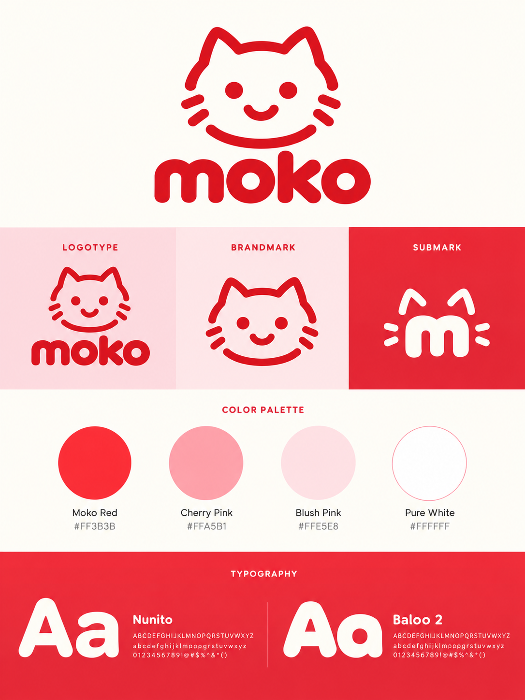
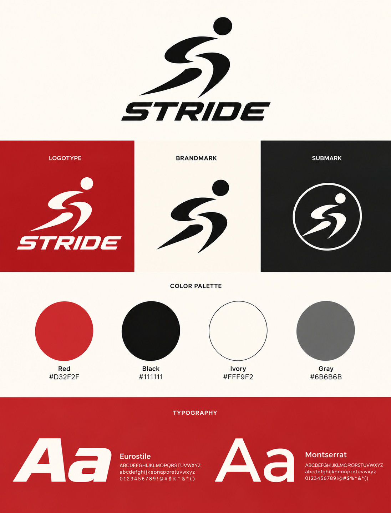
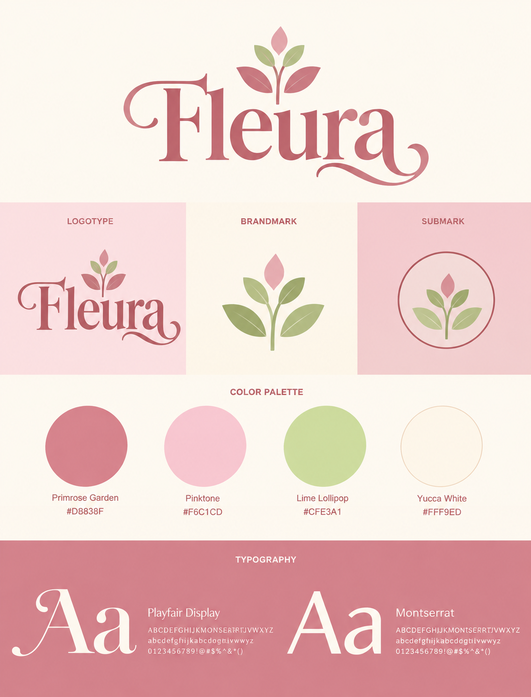

Nexora
An angular N built from interlocking geometric forms, paired with a bold uppercase wordmark.
Open Nexora logo ↗Sypher / Selected works / Branding
A collection of symbols, letterforms, and visual worlds. Nine logo concepts, with a closer look at how Moko, Stride, and Fleura extend into a brand system.
01 — 09 / 2026A selection of logo concepts exploring bold symbols, expressive lettering, and versatile visual identities.
CONCEPT COLLECTION · 202601 / The marks
Geometric symbols, character-led identities, and expressive wordmarks. Select a logo above to jump to its design notes, or open the original artwork below.
An angular N built from interlocking geometric forms, paired with a bold uppercase wordmark.
Open Nexora logo ↗A stacked serif wordmark that turns the name into a compact typographic composition.
Open Velora logo ↗A smiling cat symbol paired with soft, rounded lowercase lettering.
Open Moko logo ↗A rising sun, mountains, and flowing lines come together in a compact landscape emblem.
Open Sumora logo ↗An interlocking AV monogram with strong, slanted letterforms and a spaced Avengers wordmark.
Open AV / Avengers logo ↗A continuous angular symbol paired with widely spaced uppercase lettering.
Open Axis logo ↗Three connected circular figures form a shared center alongside a bold wordmark.
Open Kinora logo ↗A running figure and italic wordmark express forward movement.
Open Stride logo ↗A leaf motif grows from an expressive serif wordmark with a flowing terminal.
Open Fleura logo ↗02 / Beyond the logo
Each board brings together a primary logo, alternate marks, a color palette, and typography. Explore each visual identity in detail, or open the full board.
Explore visual identity ↗
Branding / Visual identity concept
A friendly cat character and rounded lettering, developed into red and pink logo variations, a color palette, and a typography system.
Explore Moko visual identity ↗
Branding / Visual identity concept
A running figure and italic wordmark, extended through red, black, and white variations, supporting colors, and typography.
Explore Stride visual identity ↗
Branding / Visual identity concept
A botanical serif wordmark with blush pink and soft green, supported by alternate marks, a color palette, and typography.
Explore Fleura visual identity ↗Logo design / Visual identity / Brand guidelines